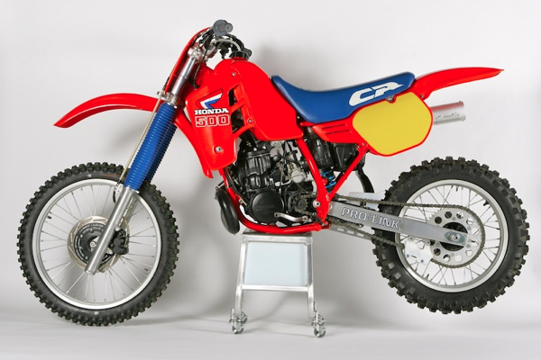
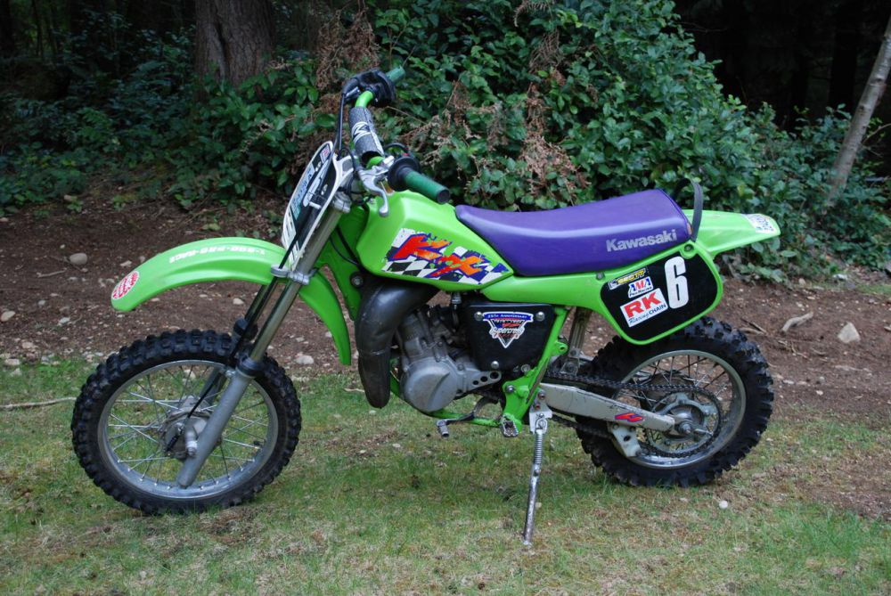
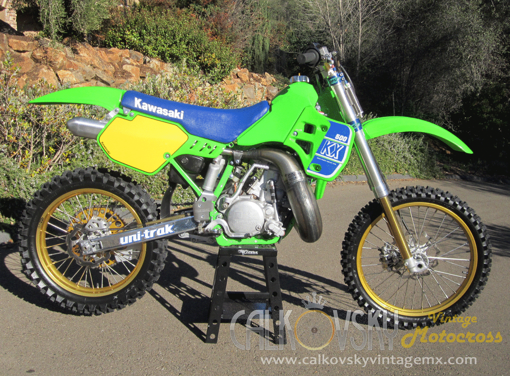

Motorcross History
The 1986 CR500 2-stroke
This dirtbike is a cr500 2-stroke from 1986, these bikes have stopped being produced because 500cc 2-strokes had too much power! the strongest 2-stroke dirtbike being produced today is a 250cc.
The Hasqvarna 250 4-stroke

The earliest motorcycles were little more than bicycles with small internal combustion engines attached.
The 1986 kx60 2-stroke
When people began to race with motorcycles, sometimes they even used the tracks built for bicycle racing. This is a picture of a kids dirtbike meant for racing, it is a kx60, it has 60cc.
The 1986 kx450 4-stroke
In the earliest days of the century, manufacturers entered their motorcycles in competitive events to publicize their brand and prove their performance and durability, just as they still do today.